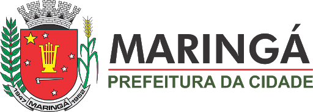

O município tem origem com a colonização do norte do Paraná, que teve
início no fim do século XIX. A região, que era predominantemente ocupada
por florestas de mata atlântica, atraiu a atenção de produtores rurais
paulistas e mineiros devido à presença da "terra roxa" – do italiano,
erra rossa (vermelha) -, originada da decomposição do basalto e extremamente
fértil. O principal interesse dos fazendeiros era a aumentar a área de produção
de café. Para solucionar os problemas de logística da região, um grupo de
azendeiros da região, liderados pelo paulista Antonio Barbosa Ferraz, promoveu
a construção de uma estrada de ferro ligando a cidade paranaense Cambará,
no “norte velho”, a Ourinhos, no interior de São Paulo.[10]
Em 1923, uma comitiva liderada por Edwin Samuel Montagu, ex-secretário de
inanças do tesouro do Reino Unido, veio ao Brasil para negociar uma dívida
que o país possuía junto a credores britânicos. Entre os membros da comitiva
estava Simon Joseph Fraser, o 16º Lorde Lovat da Escócia, que viajou para
procurar terras férteis para cultivar algodão para a indústria têxtil britânica.
Lorde Lovat visitou propriedades do interior paulista e, seguindo a trilha
das fazendas de café, chegou ao norte do Paraná.